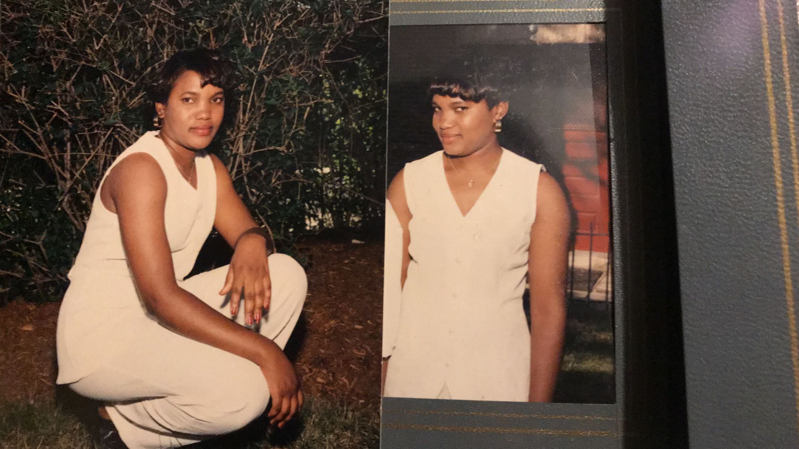
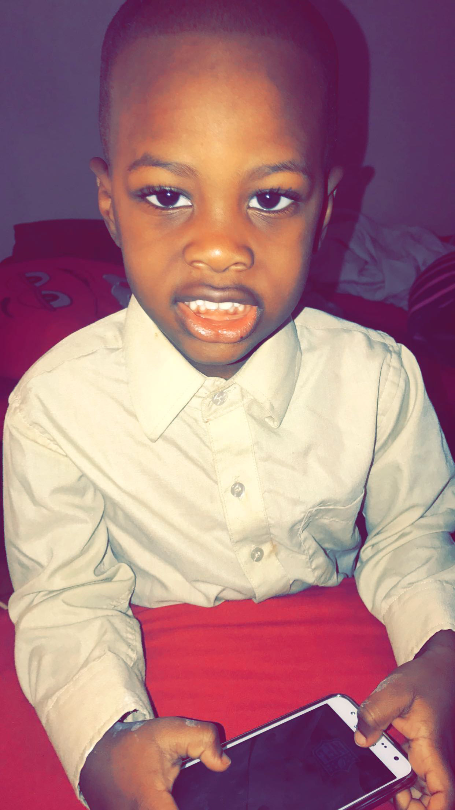
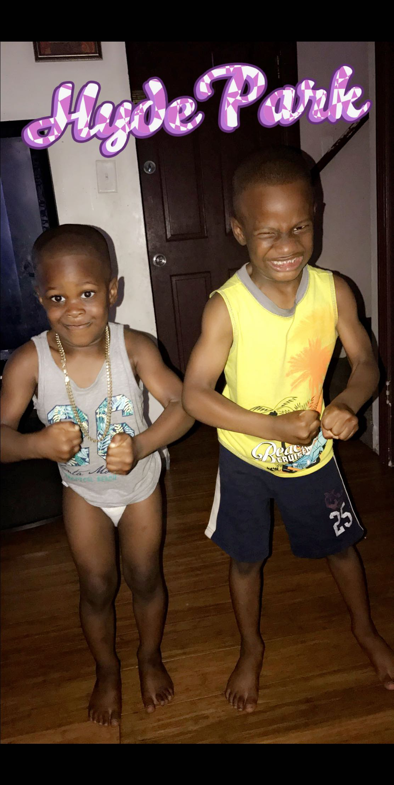

About Me
All About Me
- I was born in Boston, Massachussetts.
- I grew up living with my mother and five brothers.
- I am of Haitian and Jamaican descent.
- I'm outgoing and always look forward to meeting new people.
- I love to do physical and adventurous activities.
- I think positively and can execute on almost any difficult tasks.
- I am determined to do well in anything I do and also determined to have a successful career.
- I like learning things about other cultures and religions.
- I really enjoy talking to foreigners.
- I love to travel. Doesn't have to be fancy at all, because I just enjoy being around other people's culture.
- My name is Ernest Curtis Simon.
- The most important person in my life is my mother, Magalie Simon. There's no other woman like her. There are so many great traits I love and admire about my mom. She is the most hardest-working, strong, optimistic, and beautifulest lady I know. She raised five amazing boys by herself, and did a hell of a job at it. I love this woman so much. The courage to go through what immmigrants go through, and working three jobs is what motivates me everyday. My mother always puts her sons first, and I am grateful for that. Without her I would have never gotten a scholarship to play the sport that has bless me in so many ways. She pushed me so hard and kept me out of trouble. As a child, I never liked going to school but my mother refused to give up on me. I probably would have been suffocated by the nonsense that happens in my neighborhood, if it wasnt for my mother. She is my hero. My mother is my greatest influence. She supports me, and the decisions I make, showed me that success comes from hard work, she inspires me and taught me to always believe in myself.

IT’S IMPORTANT THAT WE DEVELOP TIES AND BONDS THAT CANNOT BE BREAKABLE.
Often kids decide to join gangs because they feel welcomed to be apart of a family/click. Therefore I make sure my cousins know they have me here for anything. The sacrifices that my family has done for me, is why I am in the position I am today. Therefore, it’s only right to keep this legacy going. “Family is all we got.”
- I love to spend time with my family. My uncle used to always scold that "Family bonding" is very important. Its importhat that we develop ties and bonds that cannot be breakable. Often kids decide to join gangs becuase they welcome them in, to be a part of their family. so I make sure my cousins know that they have me here. The sacrifices that my family has done for me, is why I am in the position I am today.
- My little cousins, Peter-Scott and Eathon are my world. I am a father figure to them, so I love them like my own. There father past so I am glad God uses me as a role model/father figure for these two wonderful boys. They are so smart and full of joy. They put a smile to my face everytime I see them.



On the other hand, they also helped me learn numerous things about myself. I’ve learn that everything I do matters. My cousins watches everything I do, and tries to emulate me. So if I get in trouble they most likely going to follow under my footsteps. Also I’ve learn to choose my words with the utmost care whenever I’m angry. There has been many occasions where I wanted to say what’s on my chest, but couldn’t because I knew it was impossible to take the words back once they’ve been said. Lastly, I’ve learned that I can’t protect anyone from the ugliness of the world. The same way my mother or older brothers couldn’t protect me from it either. There are going to be times when I’m not around, so it’s crucial for me to teach p and e how to defend themselves.
I love to spend time with my family. My uncle used to always scold that "Family bonding" is very important. Its importhat that we develop ties and bonds that cannot be breakable. Often kids decide to join gangs becuase they welcome them in, to be a part of their family. so I make sure my cousins know that they have me here. The sacrifices that my family has done for me, is why I am in the position I am today.
My little cousins, Peter-Scott and Eathon are my world. I am a father figure to them, so I love them like my own. There father past so I am glad God uses me as a role model/father figure for these two wonderful boys. They are so smart and full of joy. They put a smile to my face everytime I see them.
About Me
Now
- I am twenty years young, and I am living my best life. I CAN'T LIE.
- I am blessed, I get to do what I love everyday, I am healthy, I am access to food, and I got a roof over my head. I cannot complain at all. I got family right now, who would literally die to be in my position so I am extremely grateful.
- I attend UMO and study finance.
- I also play football. I am a cornerback and been doing that now for half life. I LOVE IT!
- I am almost done with school and seeing what life brings me. I know I will be successful because of the hard-work that I put in everyday. God put me on this Earth, for a reason, and I will fulfill his mission. I hope one day I can save the lives of millions of people from both my parents birthplaces. I’ve had dreams of me making a difference in peoples since I was young, so I deel like it's my destiny.
- During college, I met the love of my life. She's an angle from above. The first time I saw her, I knew she was going to be mine. She's such a bright young lady and her future is anything she wants it be.
All About Me
Home
- About Me
- Teenage Years
- Family
- My Why